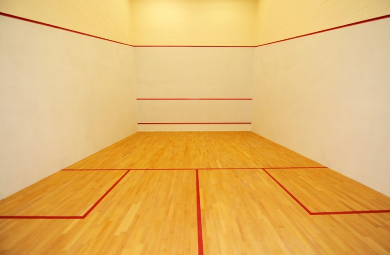

Squash was founded in the early 1800's in a small town in England.
The sport is huge internationally and has slowly been gaining popularity in the United States. Squash is an amazing sport in that you can start getting into the game at any age. I've seen players start in their 30's pick up a squash racquet for the first time and turn out to be really strong players.
Getting StartedIt can seem really overwhelming jumping into a sport but if you go in with the a positive outlook, learning will be fun!
Equipment
Below is a list of things you need to start your journey to learning how to play squash
| Type | Time | Activity |
|---|---|---|
| Warm-up | 10 mins | Run 20 laps around the perimeter of the court until you're warm and then get a good stretch |
| Ball Control | 20 mins | Bounce the ball on your racquet until you can get 20 in a row without losing balance or control (backhand and forehand) |
| Hit the ball! | 25 mins | Practice hitting the ball to yourself on both sides. Don't worry if you can't get it the first few tries. You'll get comfortable the more times you do it |
| Cool Down | 15 mins | Stretch your muscles and use this opportunity to make sure you're feeling great. |
If you're interested in getting lessons, checkout our lessons page.
More InfoIf you're looking for more information about the rules of Squash or to find club near you, check out US Squash's website. They do a great job of showing the larger network of squash and their website does a good job of organizing all of the events they host throughout the country. The website is really easy to use.